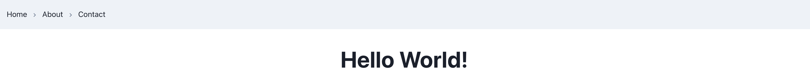

Create a new React App using Chakra-UI
React App
Date: April 16, 2024.
Few days ago, I wished to create a new React App utilizing chakra-ui compnents. Wonder what, I did not find any blog or article that could help me out and get me up to speed quickly. So, I decided to write one for the community. Let's get started.
Assuming that you have `npm` and `node` installed on your system, let's start by creating a new React App. I will be citing references of the blogs and articles that I referred to while creating the app. You can refer to them for more details.
Create a new React App using the following command:
Everything is now setup, you may navigate to `src/App.js` or `src/App.jsx` and start building your app. I will illustrate
how to use chakra-ui breadcrumb component and create a simple navbar using it.
Let's create a new folder `components` inside `src` and add a file `navbar.jsx` inside it.
Import the necessary components:
You will need to install chakra-ui/icons using:
Preview
That's it, you have successfully created a new React App using chakra-ui components. You can now start building your app using chakra-ui components. You can refer to the official documentation of chakra-ui for more details: Chakra-UI
In the next blog, I will illustrate adding browser routing to the app using `react-router-dom` and creating a multi-page app using chakra-ui components. Stay tuned!